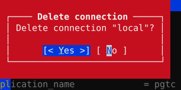
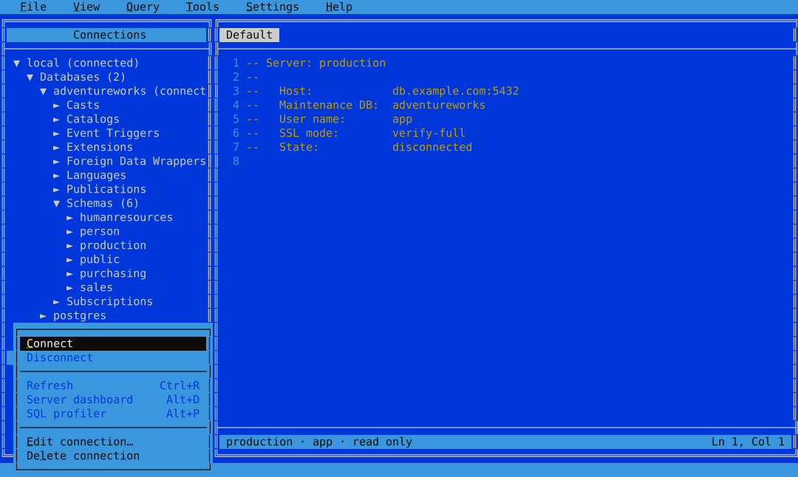
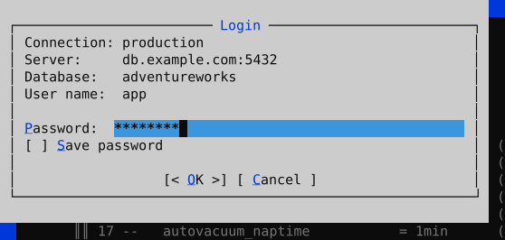

A saved connection is a set of connection parameters for one PostgreSQL server: host, port,
role, maintenance database and sslmode. This chapter covers managing saved connections, connecting and
disconnecting, password lookup (.pgpass), TLS, and the sessions pgtc holds on a server.
Saved connections
The saved connections are the top-level rows of the object tree. They are stored in settings.toml
(Files and folders) — without passwords.
Saving a new connection
Choose File → New connection… (F9, Enter).
The dialog opens with the defaults of a local server:
The New connection dialog as it opens.
Fill in the parameters:
Filled in for a second server.
Field
Meaning
Default
Name
Display name of the connection in the tree and in the status row of its tabs. Not sent to the server.
Host
host: host name or IP address, or the directory of the server's Unix-domain socket.
localhost
Port
port: 1 – 65535.
5432
Maintenance DB
dbname of the server session: the database pgtc connects to for the cluster-wide catalogs (pg_database, pg_roles, pg_tablespace), pg_settings, the server-wide dashboard and the profiler. Any database the role has CONNECT on.
postgres
User name
user: the role to connect as. Every session pgtc opens on this server uses this role.
postgres
Password
Optional, masked. Empty: taken from .pgpass, or asked for when the server requests one.
Save password
Write the password to .pgpass after the first successful authentication (see Passwords).
sslrootcert: a PEM file with the CA certificates to trust, instead of the operating system's trust store.
AI not allowed
The AI assistant (F8) is disabled for this server: its schema is never sent to a model provider. Intended for production and customer servers (see Privacy).
off
Press Enter (OK). An invalid value — a non-numeric port, for example — is
reported and the dialog stays open.
The connection is added to the tree in the disconnected state. Nothing is sent to the server yet.
Changing or deleting a saved connection
F2 on a server row.
Edit:F2 on the server row, Edit connection… — or
File → Edit connection…, which also works with the cursor on a database or any object
below the server.
Delete:F8 on the server row, Delete connection in its context menu,
or File → Delete connection…. pgtc asks for confirmation:

A connected server is disconnected first, with the prompts described under
Disconnecting. Only the entry in settings.toml is removed: nothing is
executed on the server, and a matching line in .pgpass is left in place.
Editing a connected server
Changed
On OK
Name or AI not allowed only
Applied immediately. All
sessions and tabs stay open.
Any connection parameter: host, port, maintenance database, user name, a typed password, SSL mode, root
certificate file
The parameters are saved, then the server is disconnected and reconnected with them.
The prompts of Disconnecting come first (unsaved text, open transactions); then every tab
of that server is closed and its sessions are terminated. After the reconnect the tree is expanded down to the
previously selected object, if it still exists.
Cancel in one of the prompts keeps the current sessions and tabs; the edited parameters
remain saved and take effect at the next connect.
Connecting
The cursor is on the disconnected server production: the default tab shows its saved
parameters.
Put the cursor on the server row.
F2, Connect — or File → Connect.

The context menu of the server: Connect is its first item.
If the server requests a password and pgtc has none, the login dialog asks for it.
pgtc opens one session on the maintenance database, reads server_version_num, and marks the row
name (connected). The row expands to the cluster-wide groups Databases, Login/Group Roles and
Tablespaces; the window status line shows the server version.
Any number of servers can be connected at the same time.
Every session pgtc opens sets application_name = 'pgtc', so its backends can be identified in
pg_stat_activity and in the server log (%a in log_line_prefix).
Authentication: the password methods scram-sha-256, md5 and
password, and methods that need no credentials from the client (trust,
peer on a Unix-domain socket). GSSAPI, SSPI and client-certificate authentication are not
supported.
Timeout: a connection attempt is abandoned after the connect timeout — 10 s by default
(Settings).
Server versions: PostgreSQL 11 and newer. An older server is refused. A major version newer than the
newest one pgtc was verified against (18) connects with the warning “PostgreSQL N – not yet verified with
pgtc”: the catalog queries of the newest known version are used.
The server row: version and configuration
The cursor on a connected server: connection parameters, version and the run-time configuration.
With the cursor on a server row, the Default tab shows — as SQL comments — the saved parameters, the
connection state and, for a connected server, the version and the contents of pg_settings: every
parameter visible to the connected role, ordered by name, with
the current value as current_setting() / SHOW prints it, unit included
(6GB, 5min);
source: default, configuration file, client, override, … — for
configuration file with sourcefile and sourceline, which the server exposes
only to superusers and members of pg_read_all_settings;
(restart needed) where pending_restart is true: the value was changed in the
configuration file but needs a server restart to take effect.
The configuration is read when the server row is first selected and cached until the server is disconnected;
Ctrl+R on the server row reads it again (for example after pg_reload_conf()). Move into the
text with F6; Ctrl+F searches it.
The login dialog

Password lookup order: the password typed in the connection dialog (kept in memory for this run of pgtc), the
password of a connection URI, the environment variable PGPASSWORD, the .pgpass file. If none
of them yields a password and the server's authentication method requires one, the login dialog appears.
Type the password and press Enter.
Save password writes it to .pgpass once authentication has succeeded.
On an authentication failure the dialog reappears with the server's error message.
Esc aborts the connect; the server stays disconnected.
The password is held in memory until pgtc exits and reused for every further session on that server (database
sessions of the tree, query tabs, dashboard, profiler) — it is asked for once, not once per session.
Passwords: the .pgpass file
pgtc persists passwords only in libpq's password file — the file psql, pg_dump
and every other libpq client reads. Existing entries work in pgtc without further setup, and entries written by pgtc
work in those clients. No operating-system keyring is used, so the same mechanism works on headless hosts and over
SSH.
Lines starting with # are comments. A literal : or \ in a field is
escaped as \: or \\.
On Linux and macOS the file is ignored unless its mode is 0600 or stricter
(chmod 600 ~/.pgpass), as in libpq.
For the server session the lookup uses the maintenance database as database. The password found
there is held in memory and reused for every other session on that server, whatever its database — so one line
for the maintenance database is enough. Only when no password is known yet are the other sessions looked up
with their own database name.
What “Save password” does
After a successful authentication pgtc writes one line for host, port, maintenance database and user:
an existing line with the same host, port, database and user is replaced;
otherwise the line is appended;
all other lines and comments are preserved;
a missing file is created — on Linux and macOS with mode 0600.
.pgpass stores passwords in clear text. Its only protection is the file's
permissions.
SSL (TLS)
SSL mode takes libpq's sslmode values with libpq's semantics:
sslmode
Encryption
Server certificate verification
disable
None; TLS is not requested
—
prefer (default)
TLS if the server accepts the SSL request; otherwise the connection continues unencrypted
None
require
TLS; the connection fails if the server refuses it
None
verify-ca
TLS
The certificate chain must lead to a trusted CA
verify-full
TLS
As verify-ca, and the certificate must match the host name of the connection
Trusted CAs are those of the operating system's trust store. With
Root cert. file set, only the certificates in that PEM file are trusted — the
equivalent of sslrootcert, for servers with a certificate from a private CA.
prefer and require encrypt but do not authenticate the server; only
verify-full protects against a man-in-the-middle. Use it for any server reached over an untrusted
network.
Client certificates (sslcert / sslkey, the cert authentication method)
are not supported yet.
The cancel request of a session (Cancel) is sent over a connection of its own, with the
same sslmode and root certificate.
The sessions pgtc opens on the server
A PostgreSQL session is bound to one database, and its backend executes one statement at a time. pgtc therefore
never multiplexes its work over a single session; it opens a session per database and per tab, on demand. All of them
authenticate as the role of the saved connection and report application_name = 'pgtc'.
Session
Database
Opened
Terminated
Server session
Maintenance database
On Connect
On Disconnect
One per database expanded in the tree — reads that database's catalogs for the tree, the object definitions and Find object
That database
When its row is first expanded
On Disconnect
One per query tab
The tab's database
When the tab opens
When the tab closes
One per dashboard, profiler and statistics tab
The maintenance database, or the database the tab was opened for
When the tab opens
When the tab closes
Short-lived sessions for Find object across a whole server and for exporting / loading a database definition
Each database concerned
For the duration of the operation
When it ends
Consequences of one session per query tab:
a long-running statement blocks neither the tree nor any other tab;
transaction state, session-level settings (SET), temporary tables, prepared statements and advisory
locks are private to the tab;
a cancel request, or a lost connection, affects that tab only;
each open tab counts against max_connections (and against the role's and the database's
CONNECTION LIMIT).
The tab's status row identifies its session: local · postgres@adventureworks is the saved connection
local, role postgres, database adventureworks.
Termination is clean. When a tab closes, pgtc first sends a cancel request if a statement is still running,
then closes the session with the protocol's Terminate message; the server rolls back an open transaction. A session
that has not ended within 3 seconds is dropped. The server log therefore shows no unexpected EOF on client
connection entries for pgtc.
Disconnecting
Put the cursor on the server row and choose Disconnect (F2, or the
File menu).
Disconnecting terminates every session on that server and closes the tabs that own them: query tabs, object
tabs, dashboard, profiler and statistics tabs. Before anything is closed pgtc asks, as it does on quit:
for each query tab of the server with unsaved editor text: Save them? (unless that prompt is turned off
in Settings);
if any tab's session is inside a transaction block: Commit all /
Rollback all / Cancel.
Cancel at either prompt aborts the disconnect; no session is touched. After a completed
disconnect pgtc holds no backend on that server.
If a session is lost — server restart, pg_terminate_backend(), network failure — the status line
reports it. Losing the server session collapses the server's row; reconnect as usual. A query tab that lost its
session keeps its editor text; its transaction, session settings and temporary objects are gone with the backend.
Started with connection options, pgtc adds a saved connection for them — unless one with the same host, port,
database, user and sslmode exists — and connects immediately. Options and environment variables
(PGHOST, PGPORT, PGUSER, PGDATABASE, PGSSLMODE, …)
follow psql; see Reference → Command line.
-W forces the password prompt; -w never prompts (a missing password is then an
error).
A password from a URI or from PGPASSWORD is used for this run only and is never written to
disk.